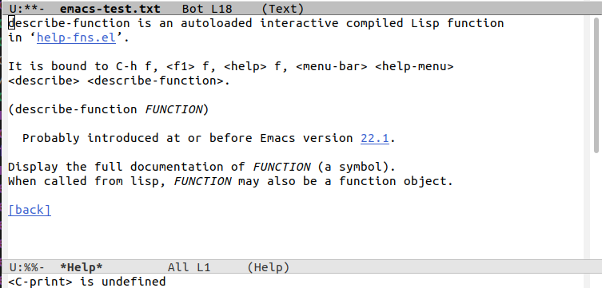
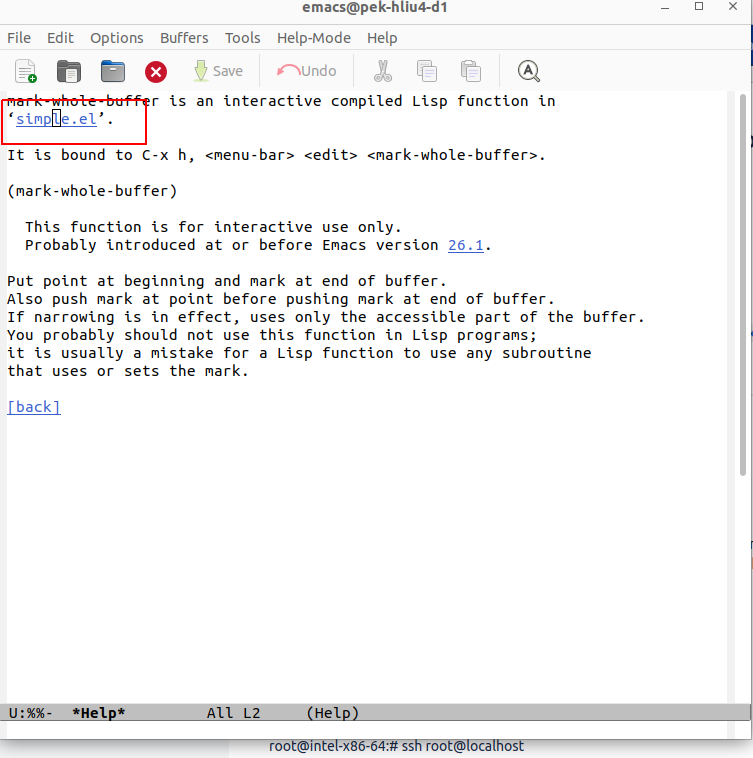
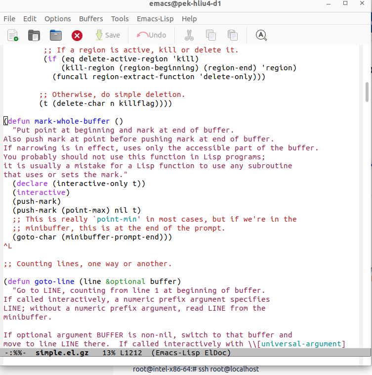

How do I find the function definition?¶
describe-function¶
The ‘descirbe-function’ is bound to c-h f,
Type C-h f and then type describe-function, you will get the whole The full documentation of describe-function.
If you are interested, you can get the full documen- tation of any Emacs Lisp function at any time by typing C-h f and then the name of the function (and then RET). Similarly, you can get the full documentation for a variable by typing C-h v and then the name of the variable (and then RET). Also, describe-function will tell you the location of the function definition.
Example¶
Typing the following commands:
C-h f and typing mark-whole-buffer
or
M-x describe-function and then typing mark-whole-buffer
Put point into the name of the file that contains the function and press the RET key. In this case, RET means push-button rather than “return” or “enter”. Emacs will take you directly to the function definition
 xref-find-definitions¶
More generally, if you want to see a function in its original source file, you can use the xref-find-definitions function to jump to it. xref-find-definitions works with a wide variety of languages, not just Lisp, and C, and it works with non-programming text as well. For example, xref-find-definitions will jump to the various nodes in the Texinfo source file of this document (provided that you’ve run the etags utility to record all the nodes in the manuals that come with Emacs; see Section “Create Tags Table” in The GNU Emacs Manual).
To use the xref-find-definitions command, type M-. (i.e., press the period key while holding down the META key, or else type the ESC key and then type the period key), and then, at the prompt, type in the name of the function whose source code you want to see, such as mark-whole-buffer, and then type RET. (If the command doesn’t prompt, invoke it with an argument: C-u M-.; see Section 3.4 “Interactive Options”, page 31.) Emacs will switch buffers and display the source code for the function on your screen1 . To switch back to your current buffer, type M-, or C-x b RET. (On some keyboards, the META key is labeled ALT.)